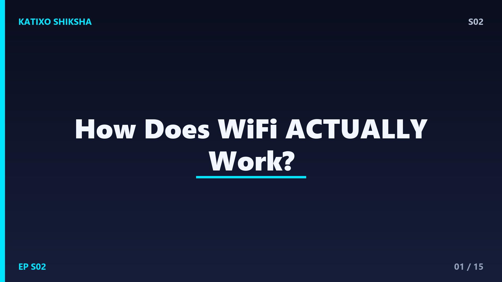
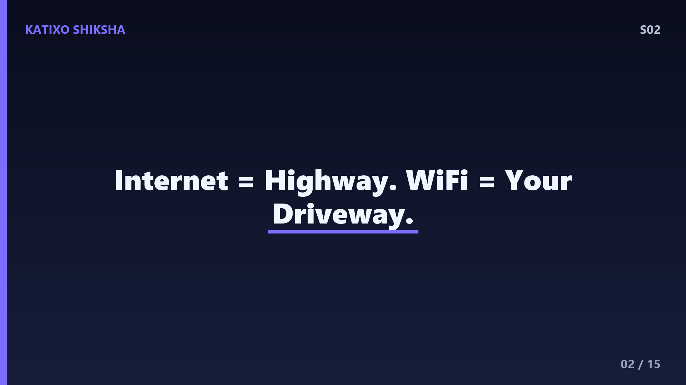
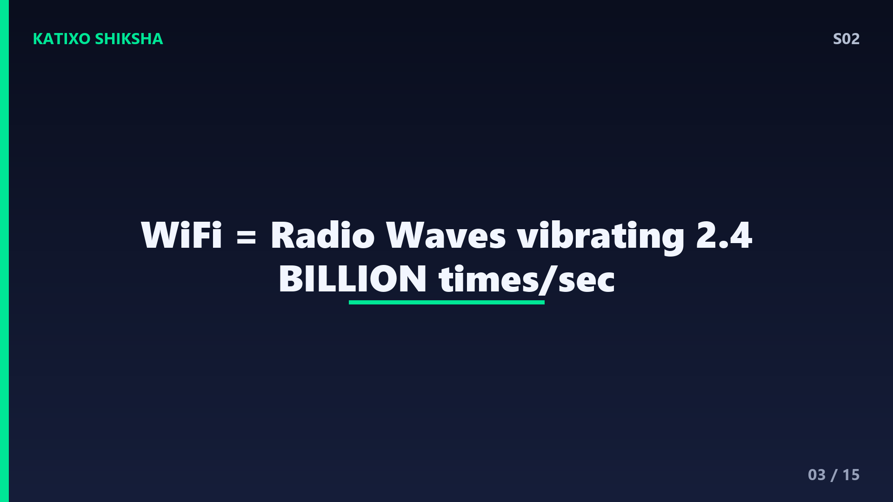
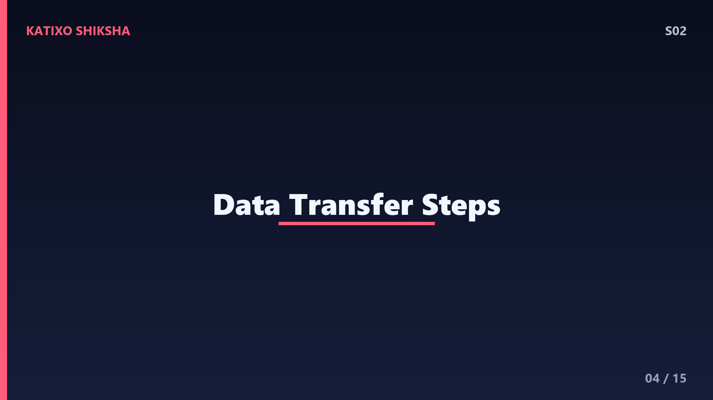
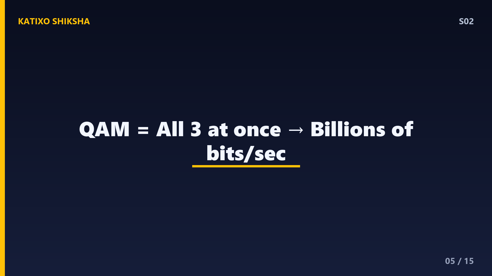
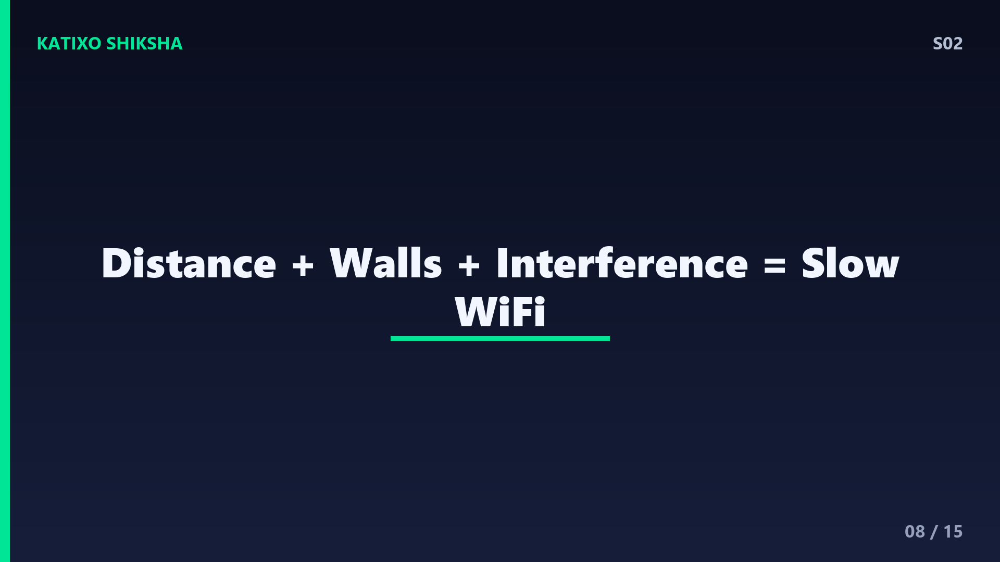
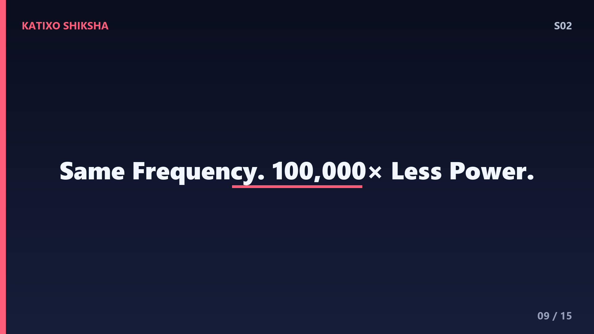
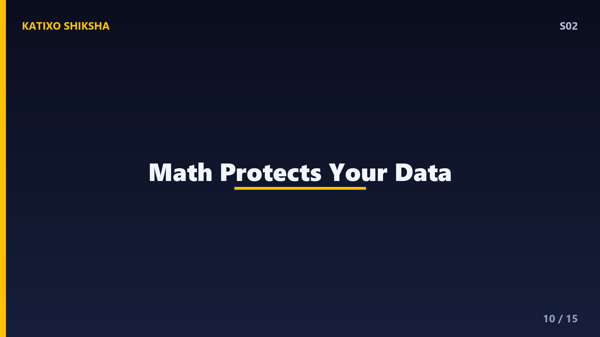
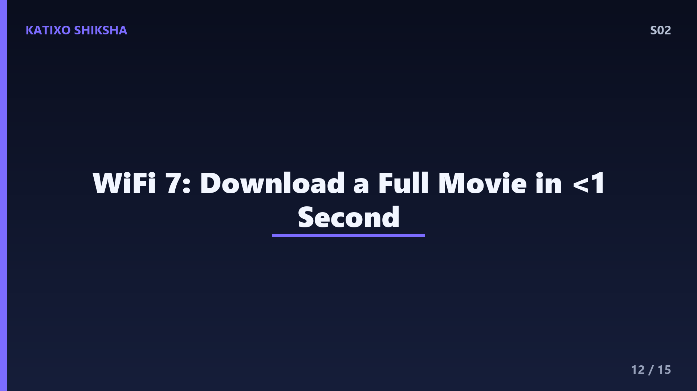

S02 — How Does WiFi Actually Work?

Slide 1Right now, invisible waves are passing through your body. Through the walls around you. Through your clothes, your bag, even your bones. And these waves are carrying Instagram reels, YouTube videos, WhatsApp messages — all flying through the air at the speed of light. This is WiFi. You use it every single day, but have you ever wondered — how does it actually work? How does a cat video travel from a server in America to your phone in India without any wires? Today on Katixo KhojLab, we break it down. Let's go!

Slide 2First, let's get one thing straight — WiFi is not the internet. Most people use these words interchangeably, but they're different things. The internet is a massive global network of computers connected by undersea cables, fiber optics, and satellites. WiFi is just the last few meters — the wireless connection between your router and your device. Think of the internet as the highway system, and WiFi as your driveway. Your data travels thousands of kilometres through cables, and only the last 10-20 meters is wireless. WiFi is literally the short final hop.

Slide 3So how does that final hop work? WiFi uses radio waves — the same type of waves used in FM radio, TV broadcasts, and walkie-talkies. Radio waves are a form of electromagnetic radiation, just like visible light, X-rays, and microwaves. The difference is the frequency. WiFi typically operates at 2.4 gigahertz or 5 gigahertz. Giga means billion. So your router is vibrating electromagnetic waves two point four BILLION times per second. That's insane when you think about it.

Slide 4Here's how the data transfer works, step by step. Your phone wants to load a webpage. It encodes that request into binary — ones and zeros. Then it converts those ones and zeros into a pattern of radio waves. It transmits those waves through its antenna. Your WiFi router picks up those waves with its antenna, decodes the binary, and sends the request through the ethernet cable to the internet. When the response comes back from the internet, the router does the reverse — encodes the data into radio waves and beams it to your phone. All of this happens in milliseconds.

Slide 5But wait — how do you encode ones and zeros into a wave? This is where modulation comes in. Think of a radio wave as a smooth, repeating curve — a sine wave. To send data, you modify — or modulate — that wave. You can change its amplitude — how tall the wave is. You can change its frequency — how fast it vibrates. Or you can change its phase — where in the cycle the wave starts. Modern WiFi uses all three at once in something called QAM — Quadrature Amplitude Modulation. Each tiny change in the wave represents multiple bits of data. It's like morse code, but billions of times faster.
Slide 6Now, you might have seen your router has two options — 2.4 GHz and 5 GHz. What's the difference? It's a trade-off between range and speed. The 2.4 GHz band has longer wavelengths. Longer waves are better at going through walls and travelling far — up to 45 metres indoors. But it's slower and more crowded because microwaves, Bluetooth, and your neighbour's router all use 2.4 GHz too. The 5 GHz band has shorter wavelengths — faster speeds but shorter range, maybe 15 metres, and it struggles with thick walls. Newer WiFi 6E adds a third band at 6 GHz — even faster, even shorter range.
Slide 7Here's something that blows people's minds — multiple devices can use the same WiFi simultaneously because of a technique called multiplexing. Your router doesn't send data to one device at a time. Modern routers use OFDMA — Orthogonal Frequency Division Multiple Access. Basically, the available frequency band is split into many smaller sub-channels, and different devices get assigned different sub-channels. It's like a highway with many lanes — multiple cars travel simultaneously without crashing. Each device gets its own lane.

Slide 8Now let's talk about why WiFi gets slow sometimes. Reason one — distance. Radio waves lose energy as they travel, following the inverse square law. Double the distance, signal strength drops to one-quarter. Reason two — obstacles. Walls, floors, metal objects, mirrors, and even water absorb or reflect WiFi signals. That's why your WiFi is terrible in the bathroom — water in pipes and the human body itself absorbs 2.4 GHz waves. Reason three — interference from other devices on the same frequency. When multiple signals overlap, they create noise, and your device struggles to decode the data.

Slide 9Here's a wild physics fact — WiFi signals are literally affected by where you stand. Your body is about 60 percent water, and water absorbs radio waves at WiFi frequencies. This is the exact same principle your microwave oven uses to heat food — it blasts food with 2.45 GHz waves, almost identical to WiFi, and the water molecules in the food absorb that energy and vibrate, creating heat. Your WiFi router is basically a very, very weak microwave. Don't worry though — the power levels are about 100,000 times too low to heat anything.

Slide 10Security is crucial with WiFi because radio waves go in all directions. Your neighbour can technically receive your WiFi signals. This is why encryption exists. Modern WiFi uses WPA3 encryption, which scrambles all data using complex mathematical algorithms. Even if someone intercepts your WiFi signals, without the encryption key — your WiFi password — the data looks like random garbage. Each device negotiates a unique session key with the router, so even two devices on the same network can't read each other's traffic. Math literally protects your data.
Slide 11Let's bust some common myths. Myth one — more antenna bars means faster internet. Nope. Bars show signal strength to your router, not internet speed. You can have full bars and slow internet if your ISP connection is poor. Myth two — a more expensive router automatically means faster WiFi. Not necessarily. If your internet plan is 50 Mbps, a router capable of 1000 Mbps won't make your internet faster — you're bottlenecked by the plan, not the router. Myth three — WiFi causes cancer. There is zero scientific evidence for this. WiFi operates at non-ionizing frequencies far too weak to damage DNA. The scientific consensus is clear on this.

Slide 12The future of wireless is getting interesting. WiFi 7, which is rolling out now, can hit speeds up to 46 Gbps — fast enough to download a full HD movie in under a second. Then there's Li-Fi — Light Fidelity — which uses visible light instead of radio waves. An LED bulb flickering billions of times per second can transmit data at up to 224 Gbps. The downside? Light can't go through walls, so it won't replace WiFi, but it could complement it in specific use cases like hospitals where radio interference is a problem.
Slide 13Knowledge check! Question one — what type of electromagnetic wave does WiFi use? Question two — what's the key trade-off between 2.4 GHz and 5 GHz WiFi? Question three — why does your WiFi signal weaken when you walk between your phone and the router? Pause and think. Write your answers down. Active recall beats passive watching every single time.
Slide 14Answers! Question one — radio waves, a type of electromagnetic radiation. Question two — 2.4 GHz has longer range but slower speed and more congestion; 5 GHz has shorter range but faster speed and less interference. Question three — your body is about 60 percent water, and water absorbs radio waves at WiFi frequencies, weakening the signal. If you nailed all three, you officially know more about WiFi than most adults.
Slide 15Recap — WiFi is the wireless last hop between your router and device, using radio waves at 2.4 or 5 GHz. Data is encoded through modulation — changing wave properties to represent binary. Signals weaken with distance, obstacles, and interference. Your body absorbs WiFi because of water content. Everything is encrypted with WPA3 to keep your data safe. Next time your WiFi drops — you'll actually know why. Next episode — we go inside your body to explore the blood factory. Your heart pumps 7,500 litres of blood every single day. How? Subscribe and find out. Bye!